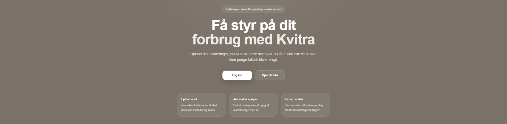
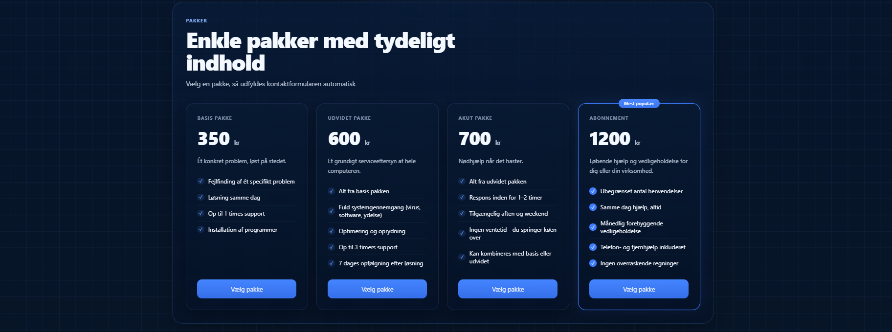
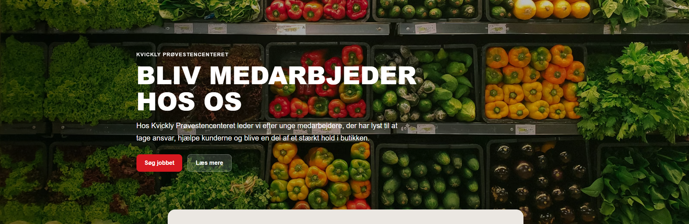
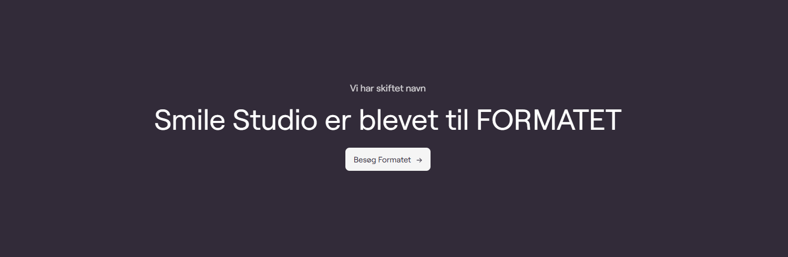
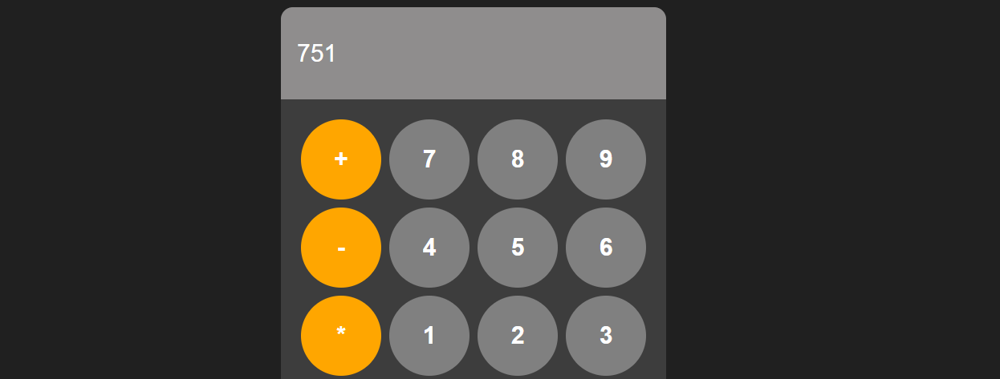
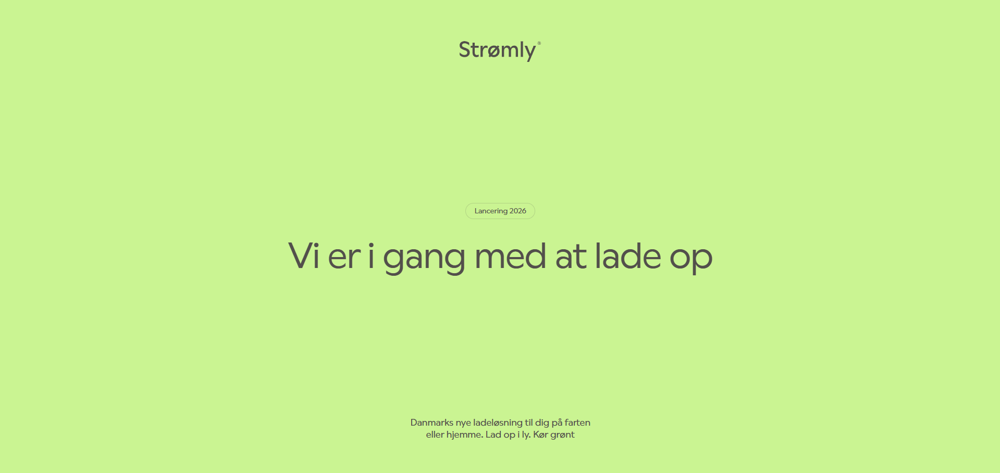
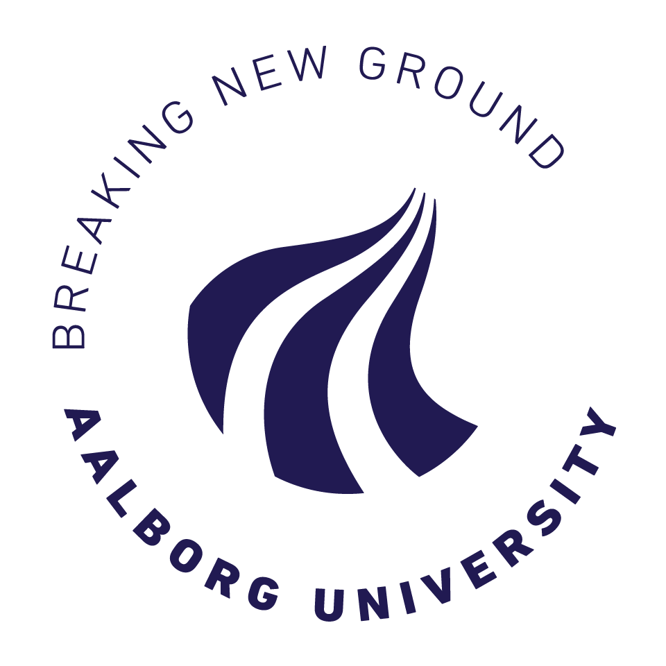
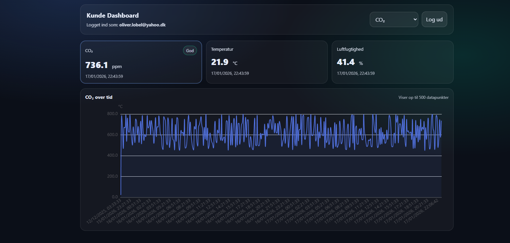
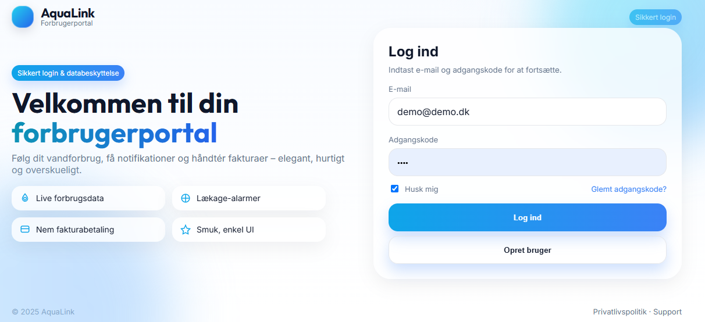

Portfolio
Tag et kig på min GitHub for et bedre indblik – her ser du kun udvalgte demoer

Kvitra - UNDERUDVIKLING
Det nyeste skud på stammen er Kvitra — en løsning under udvikling, der gør det nemmere at samle, organisere og finde digitale kvitteringer. Projektet har fokus på en enkel og brugervenlig oplevelse, hvor brugeren både kan få overblik over sit forbrug, følge sine forbrugsmønstre og sammenligne dem med andres.

Website til Itnemt.dk
ITNemt.dk er udviklet som en moderne og brugervenlig hjemmeside til en IT-support virksomhed med fokus på hurtig hjælp, tydelig kommunikation og en enkel oplevelse for kunden. Løsningen er bygget med henblik på at præsentere ydelser klart, skabe tillid og gøre det nemt for besøgende at tage kontakt.

Hente live data fra DMI
Frontend og automatiseret dataløsning udviklet til at hente live målinger fra DMI’s vejrstation 06154. Projektet indsamler temperatur- og luftfugtighedsdata, behandler dem i C# og publicerer dem i et simpelt dashboard, hvor brugeren nemt kan følge de nyeste observationer og downloade data som CSV.

Ansøgningsformular til Kvickly
Ansøgningsside udviklet til Kvickly med fokus på en enkel og brugervenlig oplevelse for nye medarbejdere. Løsningen indeholder en præsentationsside om butikken samt en trin-for-trin ansøgningsformular, hvor ansøgeren besvarer relevante spørgsmål og sender sin ansøgning direkte til butikens mail.

Onepage for smilebrandingstudio.dk
Webside udviklet til Smile Branding Studio som en del af deres rebranding til Formatet ApS. Siden fungerer som en klar og brugervenlig overgang mellem det gamle og nye brand med fokus på enkel kommunikation og et roligt visuelt udtryk.

Lommeregner på en webapplikation
Webbaseret lommeregner udviklet med fokus på præcis inputhåndtering, beregningslogik og et responsivt design. Projektet demonstrerer arbejde med JavaScript-funktionalitet, eventhåndtering og brugerflade.

Onepage for strømly.dk
Onepage-website lavet som et hurtigt og enkelt landingpage-udkast for strømly.dk. Fokus på rent design, klar kommunikation og hurtig loading.

1. Semester projekt
Vores første semesterprojekt handler om at optimere boardingprocessen i fly. Vi undersøger, hvordan forskellige boardingstrategier påvirker tiden og effektiviteten ved ombordstigning. Projektet bygger på simulationer og modeller, hvor vi sammenligner metoder som random, back-to-front og WilMA.

Kundeplatform for BA Technologies
Udkast til kundeplatform – en platform som via API-kald viser data fra målere. Bygget med JavaScript/TypeScript og sat op med Supabase. Stadig under udvikling.

Forbrugerportal m. SQL
Jeg har udviklet en webapp i HTML, CSS og JavaScript, hvor brugere kan oprette sig og logge
ind via en SQL-styret database. Projektet viser en simpel, men realistisk login-flow med fokus på struktur,
sikkerhed og en god brugeroplevelse.
- Login-system med SQL-database (brugerdata gemmes og valideres)
- Simpelt UI: tydelig form, fejlbeskeder og feedback til brugeren

Website: Coach For Business
Jeg har designet og udviklet en moderne, responsiv hjemmeside til Sanne Pedersen, hvor formålet er at give ledere
og organisationer adgang til førsteklasses coaching og lederudvikling.
- Klar visuel kommunikation: fokus på ro, nærvær og lederskab
- Fungerer optimalt på både desktop og mobil
- Frontend: HTML, CSS, JavaScript
- SEO/brugervenlighed: struktureret indhold, call-to-action og effektiv kontaktmulighed